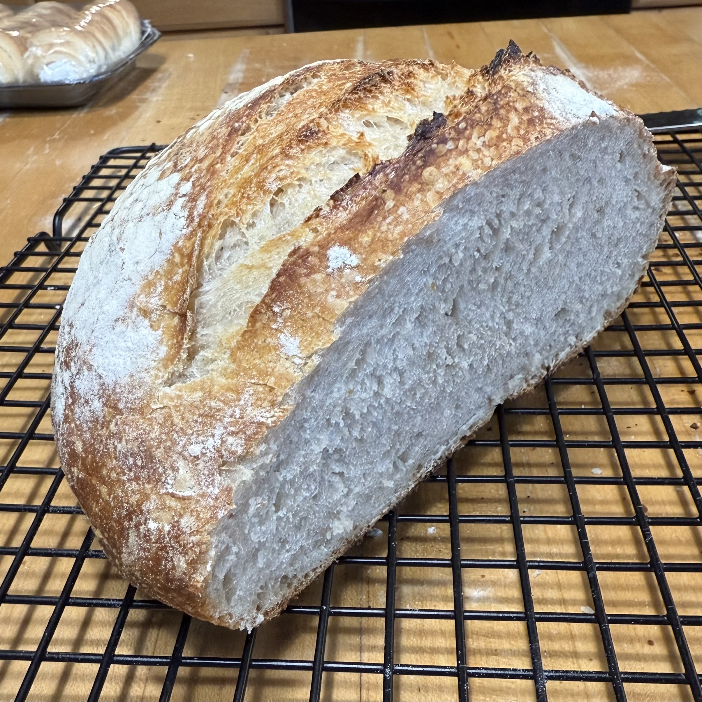

Home
Sourdough Loaf

Description
This recipe is the perfect for a beginner sourdough chef's first attempt. It's simple and uses ingredients you likely already have in your kitchen. And needless to say, it's delicious.
Make sure you're using a sourdough starter at its peak when you start, which usually requires feeding it 4-12 hours prior.
The original recipe can be found here.
Ingredients
- 3 1/2 cups all-purpose flour
- 1/2 cup active sourdough starter
- 1 1/3 cups water
- 2 tsp salt
Steps
- Feed sourdough starter 4-12 hours before mixing ingredients
- Combine flour, starter, water, and salt in a large mixing bowl and mix thoroughly
- Cover with plastic wrap and let rest for 30 minutes
- Stretch and fold by grabbibng the edge of the dough and pulling it upwardsm then folding it back into the center. Turn the bowl a quarter turn and repeat the process. Repeat two more times to complete a round
- Cover and let rest for 30 minutes, then complete another round of stretch and folds
- Cover for 30 minutes, then complete one last round of stretch and folds
- Cover and let the dough bulk ferment in a warm place for 6-12 hours, or until its size has doubled.
- Shape dough by placing it on a lightly-floured surface, folding it onto itself, and spinning it to form a ball shape
- Finish shaping by turning the the dough over and folding the sides in on the middle and pinching them together
- Transfer to a floured banneton seam-side up
- Cover with plastic and let rest in the refrigerator for 12-15 hours. Alternatively, it can be left to rise at room temperature for 3-4 hours
- Preheat a dutch oven to 500 degrees for 1 hour
- Place dough on parchment paper and score
- Transfer the parchment paper with the dough to the hot dutch oven
- Place lid on the dutch oven and bake for 20 minutes
- Remove lid, reduce oven temperature to 475, and bake an additional 15-25 minutes